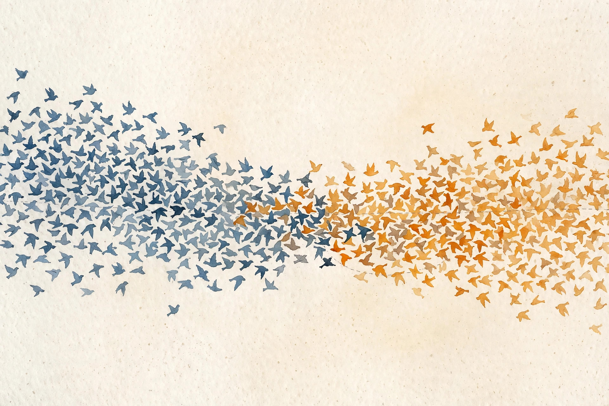

Companion · narrated from the lesson document
Instead of drawing a line between the classes, model what each class looks like, then ask which model fits a new point better. This companion walks the full arc of Unit 04: the multivariate Gaussian, Gaussian discriminant analysis, the generative-discriminative split, naive Bayes, Laplace smoothing, the two event models, and what breaks when the density is wrong.
From the lesson The idea, and every number beside it, comes from the cited section of lesson-04-generative-classifiers.md. The phrasing is the companion's.
Illustration Invented by the companion: an analogy, a toy with made-up values, or a what-if. Never lecture content.
companion Companion voice: the idea above the tag is from the lesson. The generalization below it is the companion's.
Provenance: no lecture transcript exists for this unit, and no lecture video is named in the lesson. The lesson's Source mapping states that SRC-01 chapter 4 (PDF pages 36 to 48) was read in full on 2026-10-06. Leaf rows carry SOURCE ATTRIBUTION PENDING until the RUN 6 pass, so the strict fact-vs-interpretation tagging here is the guardrail. The Bayes portrait below is a real image, included for history, not as lecture content.

Section 1 · SL-01 · C01
From the lessonSL-01 §Source anchor, §Mental model
How do you describe a cloud of points in d dimensions with one formula? A Gaussian is a bell curve in d dimensions. The mean μ is where the cloud sits. The covariance Σ is how it spreads: diagonal entries are per-axis variances, off-diagonals tilt the cloud. Contours are ellipses.
From the lessonSL-01 §Objects
Density: p(x, μ, Σ) = 1/((2π)^(d/2) |Σ|^(1/2)) exp(−(1/2)(x − μ)ᵀ Σ⁻¹ (x − μ)). μ in R^d, Σ in R^(d×d), symmetric positive definite. Assumption: Σ invertible, and the data really clusters in an elliptical cloud.
| d = 2, μ = [0, 0], Σ = [[1, 0.8], [0.8, 1]] | Value |
|---|---|
| Determinant | 1 − 0.64 = 0.36 |
| |Σ|^(1/2) | 0.6 |
| Σ⁻¹ | [[2.778, −2.222], [−2.222, 2.778]] |
| Quadratic form at x = [1, 1] | 2.778 − 2.222 − 2.222 + 2.778 = 1.112 |
| Density at x = [1, 1] | 1/(2π × 0.6) × exp(−0.556) = 0.2653 × 0.5735 = 0.1522 |
Illustration The density probe. Type any point. The toy walks the lesson's five-step computation: determinant, inverse, quadratic form, normalizer, density.
x₁: x₂:
Fixed: μ = [0, 0], Σ = [[1, 0.8], [0.8, 1]], the lesson's cloud.
From the lessonSL-01 §Correctness checks, §Failure case
Two checks. The density integrates to 1: numerically integrate on a grid for d = 1 to verify. Σ must be symmetric with positive eigenvalues: check both. The failure case: Σ singular, points on a line in 2-D. The density is undefined, |Σ| = 0. The model needs full-rank data or a regularized Σ.
Section 2 · SL-02 · C02, C03, C04, C09
From the lessonSL-02 §Source anchor, §Mental model
Instead of drawing a line between elephants and dogs, can we model what elephants look like and what dogs look like, then ask which model fits a new animal better? Fit one Gaussian per class, sharing the covariance. The class prior φ is the fraction of class-1 examples. To classify, use Bayes rule: p(y = 1 | x) is proportional to p(x | y = 1) p(y = 1). The denominator is not needed for the argmax.
From the lessonSL-02 §Derivation
The model: y ~ Bernoulli(φ), x | y = 0 ~ N(μ0, Σ), x | y = 1 ~ N(μ1, Σ). The joint log likelihood splits: the φ terms separate from the Gaussian terms. Maximizing over φ: φ = (1/n) Σ 1{y⁽ⁱ⁾ = 1}. Maximizing over μ0: the class-0 mean. Same for μ1. Σ: the pooled average of (x⁽ⁱ⁾ − μ_{y⁽ⁱ⁾})(x⁽ⁱ⁾ − μ_{y⁽ⁱ⁾})ᵀ over all n examples (notes page 40).
From the lessonSL-02 §Why the boundary is linear
With shared Σ the quadratic terms −(1/2) xᵀΣ⁻¹x cancel in the log odds, leaving a linear function of x. The posterior is logistic: p(y = 1 | x) = g(θᵀx) for a θ built from φ, Σ, μ0, μ1 (notes page 41). Separate covariances would leave a quadratic boundary: quadratic discriminant analysis.
| Four-point toy | Class 0: (0,0), (1,0) | Class 1: (0,2), (1,2) |
|---|---|---|
| φ | 0.5 | |
| μ0, μ1 | (0.5, 0) | (0.5, 2) |
| Pooled Σ | [[0.25, 0], [0, 0]], singular. The lesson adds ridge 1e−6 for the demo | |
| Boundary | the horizontal line y = 1, halfway between the class means | |
| New point (0.5, 1.5) | closer to μ1, predict 1 | |
From the lessonSL-02 §Correctness checks, §Failure case
Class means must lie inside their class clouds. Σ is pooled from both classes and divided by n, the MLE. The unbiased version divides by n − 2, but the notes use the MLE. Posterior probabilities sum to 1 across classes. The failure case: classes with different spreads, one tight, one wide. Shared Σ fits neither well, and the linear boundary misclassifies the wide class's far side. Fix: separate covariances, or drop the Gaussian assumption.
Shared covariance makes the boundary linear. The quadratic terms cancel in the log odds, and a line falls out of two clouds.
Section 3 · SL-03 · C05
From the lessonSL-03 §Source anchor, §Mental model
Discriminative models learn p(y | x) or a direct map. Generative models learn p(x | y) and p(y), then use Bayes rule. Discriminative: draw the boundary. Generative: model each side, then compare. Generative makes stronger assumptions, the shape of p(x | y), and is more data-efficient when they hold. Discriminative makes weaker assumptions and degrades less when they fail.
From the lessonSL-03 §The asymmetry
The asymmetry is one-way. If p(x | y) is Gaussian with shared Σ, p(y | x) is logistic. The converse is false: logistic p(y | x) does not imply Gaussian p(x | y). Poisson features give logistic posteriors too (notes page 42). GDA's assumption set is strictly stronger.
| True data | Small n | Large n |
|---|---|---|
| Gaussian features | GDA wins: fewer examples needed | Logistic catches up |
| Poisson features | Logistic wins | Logistic wins (notes page 42) |
Generative is not always better with little data. With misspecified densities, GDA can lose at every sample size.
Section 4 · SL-04 · C06
From the lessonSL-04 §Source anchor, §Mental model
The vocabulary has 50,000 words. A full joint distribution needs 2^50000 parameters. How do we classify anyway? Assume words are independent given the class: knowing the email is spam, seeing "buy" tells you nothing new about "price". Then p(x | y) = Πⱼ p(xⱼ | y): only 2 × 50,000 parameters. The assumption is usually false and the classifier usually works.
| Vocabulary {buy, hello} | Spam (3 emails) | Non-spam (2 emails) |
|---|---|---|
| Emails | [1,0], [1,1], [0,0] | [0,1], [0,0] |
| φ_y | 3/5 = 0.6 | |
| φ_{buy|y} | 2/3 | 0/2 = 0 |
| φ_{hello|y} | 1/3 | 1/2 |
| New email [1, 0] | 0.6 × (2/3) × (2/3) = 0.2667 | 0.4 × 0 × (1/2) = 0 |
Illustration The spam machine. The lesson's tiny corpus and the lesson's formulas. Toggle smoothing and classify any [buy?, hello?] email.
buy present: hello present:
Corpus: spam [1,0], [1,1], [0,0]. Non-spam: [0,1], [0,0]. Smoothing: (1 + count)/(2 + n_y).
From the lessonSL-04 §Correctness checks, §Failure case
The independence is conditional on y, not marginal. Compute p(xⱼ | y) within each class. The failure case: strongly correlated features, "New" and "York" always co-occurring. Naive Bayes double-counts the evidence and becomes overconfident. The probabilities are miscalibrated even when the classifications are right (SL-07).
One zero count zeroes the whole product. An unseen word combination kills its class entirely, no matter the other evidence.
Section 5 · SL-05 · C07
From the lessonSL-05 §Source anchor, §Mental model
A word never appeared in training. Is its probability really zero? Add one fake observation of each outcome. For a Bernoulli word feature: φ_{j|y} = (1 + count)/(2 + n_y). For a k-sided multinomial: (1 + count_j)/(k + n). Zero counts become small but nonzero probabilities. The estimates still sum to 1.
| After smoothing | Class 0 (non-spam) | Class 1 (spam) |
|---|---|---|
| φ_{buy|y} | (1 + 0)/(2 + 2) = 0.25 | (1 + 2)/(2 + 3) = 0.6 |
| φ_{hello|y} | (1 + 1)/(2 + 2) = 0.5 | (1 + 1)/(2 + 3) = 0.4 |
| Email [1, 0] score | 0.4 × 0.25 × 0.5 = 0.05 | 0.6 × 0.6 × 0.6 = 0.216 |
| Decision | Predict spam (0.216 > 0.05). No more 0/0. | |
From the lessonSL-05 §Correctness checks, §Failure case
Smoothed probabilities sum to 1 over the k outcomes. No parameter is exactly 0 or 1 after smoothing. As n grows, smoothing vanishes: the estimate tends to the raw fraction. The failure case: smoothing with the wrong k, for example k = 2 on a 50,000-word multinomial. The denominator is wrong and probabilities do not sum to 1. Match k to the outcome count.
Add one fake observation of each outcome. The prior is small, explicit, and it vanishes as real data arrives.
Section 6 · SL-06 · C08
From the lessonSL-06 §Source anchor, §Mental model
Bernoulli event model: the email is a checklist over the vocabulary. xⱼ = 1 if word j appears. Absences count as evidence. Multinomial event model: the email is a sequence of d draws from a word distribution. xⱼ is the identity of position j. Counts matter. Absences do not.
| Email "buy buy now", vocabulary {buy, now, hello} | Bernoulli | Multinomial |
|---|---|---|
| Representation | x = [1, 1, 0] | d = 3, x = (buy, buy, now) |
| "buy" twice | counts once | contributes its probability twice |
| Absent words | evidence: (1 − φ) terms | ignored |
From the lessonSL-06 §Correctness checks, §Failure case
The Bernoulli likelihood includes (1 − φ) terms for absent words. Forgetting them is the classic bug. The multinomial likelihood has no absence terms, and the document length d varies per email. The failure case: Bernoulli on long documents. Absence of 49,997 words dominates the product and drowns the signal. Use the multinomial model there.
Two models, one vocabulary, opposite treatment of absence. Bernoulli counts absences. Multinomial counts repetitions.
Section 7 · SL-07 · C10, C11, C12
From the lessonSL-07 §Mental model
The classifier is 90 percent accurate. Should you trust its "90 percent confident" claims? And what if only 1 percent of emails are spam? Misspecification: the assumed density shape is wrong, so the fitted parameters answer the wrong question. Calibration: predicted probabilities match observed frequencies. A model can classify well and be badly calibrated. Naive Bayes double-counting is the textbook case.
| 1000 emails, 10 spam | Accuracy | Precision | Recall |
|---|---|---|---|
| Always predict ham | 0.99 | undefined | 0.0 |
| Model: 8 caught, 5 false alarms | (987 + 8)/1000 = 0.995 | 8/13 = 0.615 | 0.8 |
Illustration The calibration audit. Bin your model's predictions: type the confidence it claimed and how many of 100 were right. The toy reports the overconfidence gap.
Claimed confidence: Correct of 100:
Reliability diagram rule from the lesson: predicted vs observed frequency per bin, near the diagonal.
From the lessonSL-07 §Correctness checks, §Nearest alternative, §Failure case
Fixes: Platt scaling or isotonic regression, post-hoc calibration maps. Class weights or threshold tuning for imbalance. The failure case: tuning the decision threshold on the test set. The reported precision and recall are then optimistic. Tune on validation, report once on test.
99 percent accuracy can mean nothing. On 1000 emails with 10 spam, always predicting ham scores 0.99 with recall 0.0.
Right answers do not imply honest confidence. A model can classify well and be badly calibrated at the same time.
Section 8 · Synthesis
From the lessonSL-01 to SL-07
The arc, end to end. One formula describes an elliptical cloud: mean for position, covariance for spread and tilt (SL-01). Fit one Gaussian per class with a shared covariance, apply Bayes rule, and the quadratic terms cancel into a linear boundary (SL-02). Generative models model each side and compare. Discriminative models draw the boundary. The stronger assumptions buy data efficiency and sell robustness (SL-03).
Naive Bayes assumes words are independent given the class: usually false, usually works, until one zero count vetoes a whole class (SL-04). Laplace smoothing adds one fake observation per outcome: the zero disappears and the estimates still sum to 1 (SL-05). The event story decides the evidence: Bernoulli checklists count absences, multinomial streams count repetitions (SL-06). And when the density is wrong, the parameters answer the wrong question: audit calibration separately from accuracy, and never report accuracy alone on imbalanced data (SL-07).
From the lesson§Research reading, §Nearest alternatives
Where the unit points next, in the lesson's own forward links. Mixture of Gaussians (U10): several clouds instead of one. Kernel density: no parametric shape at all. Logistic regression on the same word features: no independence assumption, needs more data. TF-IDF with logistic regression: the strong discriminative baseline in practice. The extension: on synthetic Poisson data, fit GDA and logistic regression across n in {50, 200, 1000, 5000} and plot test error. The falsifiable claim: logistic wins at all n, and the gap stabilizes as n grows.
Wisdom index
Each nugget states the idea in plain words, why it matters, and the transferable principle. Every one is anchored to its lesson section.